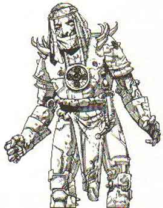

|
 |
Climate/Terrain | Any |
| Frequency | Rare | |
| Organization | Solitary | |
| Activity Cycle | Constant | |
| Diet | None | |
| Intelligence | Non (0) | |
| Treasure | None | |
| Alignment | Neutral | |
| No. Appearing | 1 (2-8) | |
| Armor Class | Vedi sotto | |
| Movement | 9 (base) | |
| Hit Dice | Vedi sotto | |
| Thac0 | Vedi sotto | |
| No. of Attacks | 2 pugni | |
| Damage / Attacks | Vedi sotto (danno da botta) | |
| Special Attacks | Nessuna | |
| Special Defenses | Vedi sotto | |
| Special Weakness | Nessuna | |
| Magic Resistance | Nil | |
| Size | Medium | |
| Morale | Fearless (20) | |
| XP value | Vedi sotto |
Descrizione
Gli Automi sono statue magiche incantate dai poteri dei chierici di Loky, la benefica divinità delle scienze e dello studio. Questi automi sono il risultato di abilità scientifiche miste a potere divino, il loro materiale è, a volte, abbellito con incisioni in argento (+15% costo di costruzione) o in oro (+30% costo di costruzione), specie se sono destinati a difendere zone interne alle Confraternite di Loky e quindi in vista ai fedeli, oppure all'esterno di portoni o cancelli. Di solito sono scolpiti per rassomigliare a guerrieri in armatura. Le loro azioni sono regolate dagli ordini impartitegli dal creatore e le loro articolazioni sono quasi buone come quelle degli umani (le loro dita possono afferrare, si possono piegare) anche se sono più lenti nei loro movimenti.
Combat
Gli Automi attaccano con i loro possenti pugni con i quali possono attaccare due volte al round. La loro Classe Armatura, i danni inflitti dai loro attacchi e i loro Dadi Vita dipendono dal tipo di Automa secondo questa tabella:
| Tipo di Automa | AC | DV | Thac0 | Danni per pugno | Peso in Kg. | XP |
| Wood | 5 | 3 (20 hp) | 17 | 1-6 | 100 | 120 |
| Copper | 4 | 4 (25 hp) | 17 | 1-6 + 1 | 150 | 175 |
| Bronze | 4 | 5 (30 hp) | 15 | 1-8 + 1 | 150 | 270 |
| Stone | 3 | 6 (40 hp) | 15 | 1-8 | 400 | 420 |
| Iron | 2 | 7 (45 hp) | 13 | 1-10 | 350 | 650 |
| Steel | 1 | 8 (50 hp) | 13 | 1-10 + 1 | 300 | 975 |
Essendo i loro movimenti goffi, anche se possono afferrare e impugnare armi non sono in grado di usarle in modo efficiente.
Gli automi possono essere solo riparati da almeno un Gran Chierico in una Chambers of Automatons, ma se raggiungono 0 punti ferita cadono in pezzi e nulla è recuperabile.
Gli automi sono immuni ad ogni incantesimo mentale che ne alteri la volontà (come charme, command ecc... ecc...).
Habitat/Society
Gli Automi sono creazioni dei Chierici di Loky (vedi link) che li costruiscono in una speciale sala chiamata Chamber of Automatons. Si dice che siano stati creati per prima dalla semi-divinità delle scienze sperimentali Zeia che poi ne avrebbe trasmesso i segreti ai propri fedeli. Sono principalmente utilizzati come guardie ma possono essere utili per compiere lavori in zone pericolose come sotto la superficie dell'acqua. Solo il chierico che ha costruito un automa può controllarlo. Essendo costruiti non intelligenti (valore di intelligenza - Non 0) costoro hanno una memoria di durata infinita ma molto piccola per cui possono ricordare un singolo ordine alla volta anche per mille anni. L'ordine impartibile ad un automa deve essere semplice. In particolare l'ordine deve essere intrinsecamente semplice nel senso che la sua formulazione deve rientrare in un massimo di 10 parole. Un ordine più lungo metterà l'automa in difficoltà impedendogli, di fatto, di eseguirlo. Anche l'azione ordinata all'automa deve essere semplice. Essendo, infatti, l'automa una creatura non dotata di intelligenza, costui potrà eseguire ordini diretti ma non ordini che richiedano un ragionamento o l'adozione di decisioni (seppure semplici) per essere eseguiti. Queste creature non sono in grado di emettere alcun suono vocale.
Alcuni potenti maghi di Arelia hanno cercato di creare simili creature e sembra che abbiano raggiunto risultati simili ma solo attraverso l'utilizzo di procedimenti più difficili e costosi.
Ecology
Gli Automi non hanno bisogno di riposare, di mangiare, di bere e di fonti di energia esterne, questo li rende guardiani perfetti per luoghi remoti, chiusi o inaccessibili. Essendo totalmente innaturali non rivestono alcun ruolo diretto nell'ecologia del mondo di Arelia.